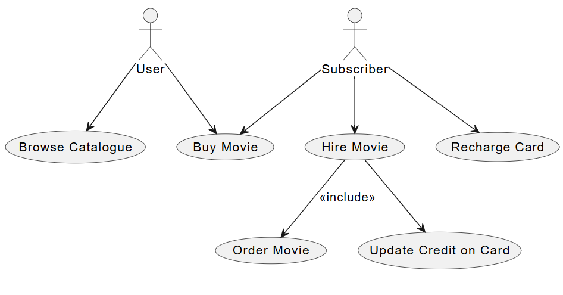
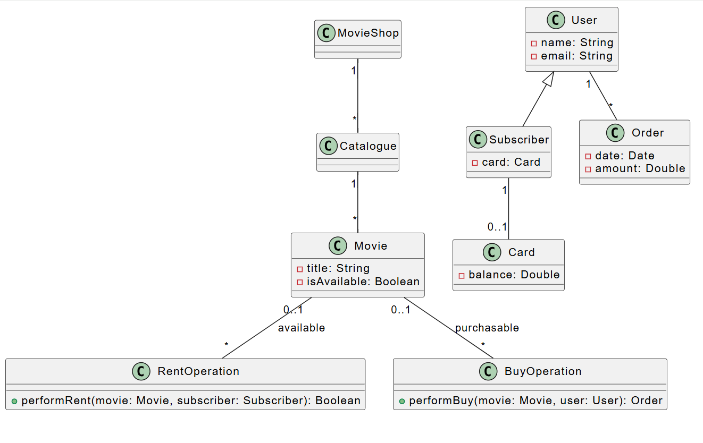
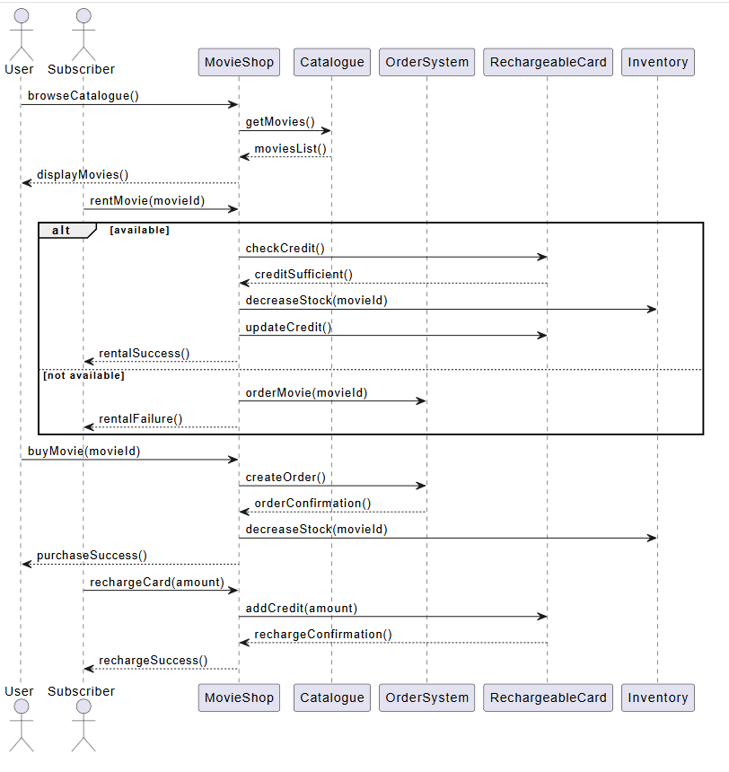
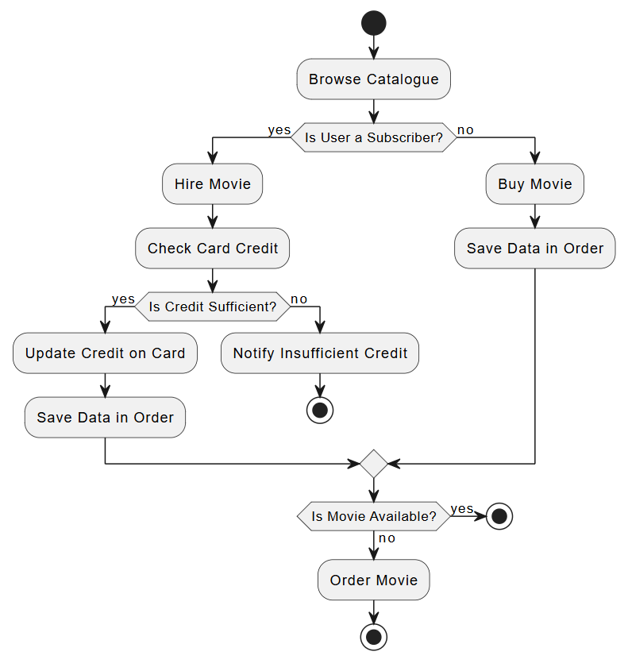

Turn natural-language requirements into Use Case, Class,Sequence and other diagrams. Built for fast iteration, reproducibility, and learning.
Creating UML diagrams is often a long and complex process, especially for beginners,
and textual requirements are frequently ambiguous.
Improving this process is important because it makes system design more efficient and helps users better understand the
logic behind each diagram.
Our assistant integrates with ChatGPT to convert natural-language descriptions into PlantUML code and render accurate UML diagrams. It supports iterative refinement, version history, and clear explanations for every change.
We started our journey with an existing open-source system. Our first step was to dive deep into the code together — to understand its structure, the logic behind it, and the challenges it presented. During this exploration, we also identified opportunities for improvement that shaped the rest of our work.
After this learning phase, we split responsibilities:
Captures actors and system goals from user stories.
Extracts entities, attributes, relations, and multiplicities.
Derives lifelines and message flow from scenarios.
Models workflows and control flow—decisions, loops, parallel branches, and swimlanes.

Before developing our system, we conducted a research presentation on two academic articles.
Their insights guided our approach and influenced the design of key features.
Below, we explain how we integrated these findings into our work.
What the article noted: This article explored how Large Language Models (LLMs) can support the identification and creation of UML diagrams — specifically Class, Use Case, and Sequence diagrams — as part of the requirements analysis process.
Our integration: In our system, we did not adopt their full evaluation framework, but we chose to use the same criteria because we found them suitable for assessing UML quality. Instead of a binary scale, we applied a weighted scoring system, where each criterion contributes proportionally to the final result. This provided richer and more balanced feedback to users while still relying on criteria shown to be useful in prior research.
What the article noted: The study examined how ChatGPT—perform in generating UML class diagrams, showing that while they can produce valid outputs, user feedback and refinement are often needed to achieve clear, useful results.
Our integration: In our system, the ability to edit models already exists, but we enhanced the process by adding direct chat-based interaction. Instead of relying only on static edits, users can request changes conversationally and immediately receive updated diagrams.
The assistant generates models that can be edited, refined, and compared with earlier versions.This iterative loop—LLM proposes, user responds, diagram improves—makes the refinement process more natural, collaborative, and efficient.